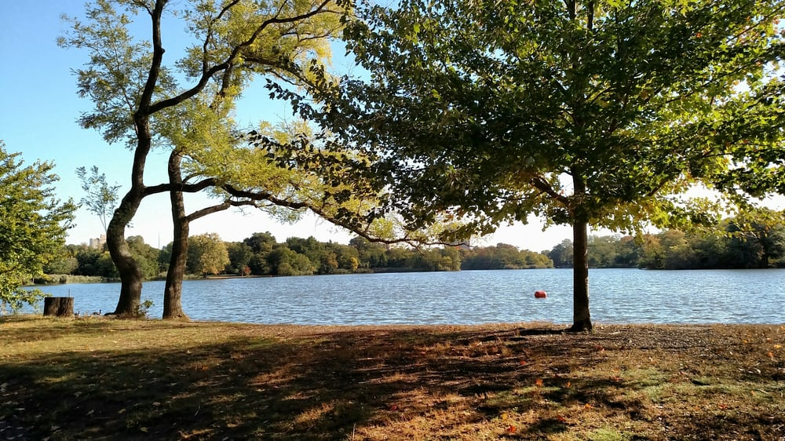
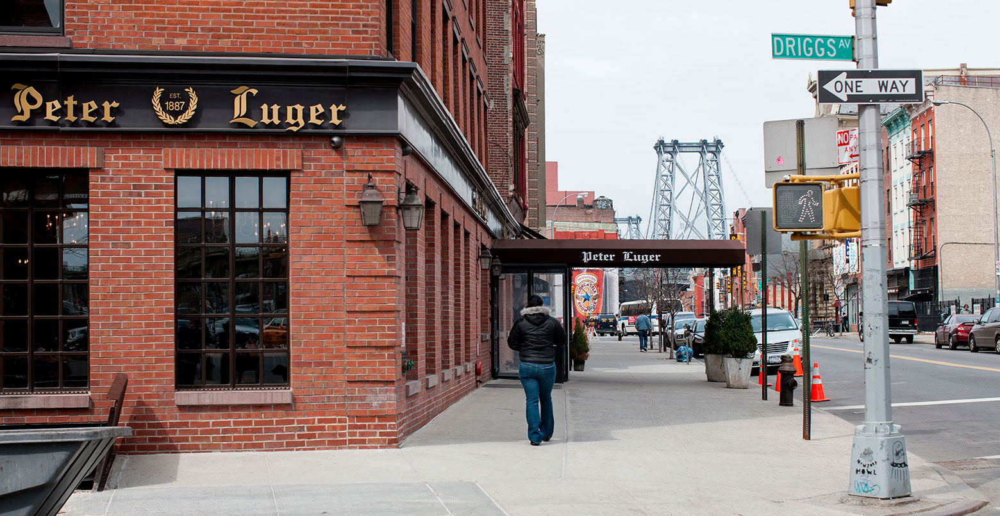

Parks
Prospect Park
Prospect Park is a 526-acre public park in the New York City borough of Brooklyn, and the second largest public park in Brooklyn. Visit Prospect Park today!
Museums
The Brooklyn Museum

The Brooklyn Museum is an art museum located in the New York City borough of Brooklyn. At 560,000 square feet, the museum is New York City's third largest in physical size and holds an art collection with roughly 1.5 million works. For museum hours visit the Brooklyn Museum website.
Restaurants
Peter Luger Restaurant
Peter Luger cash-only steak icon where old-school waiters serve aged beef in a German beer hall setting. Call Peter Luger's for reservations.